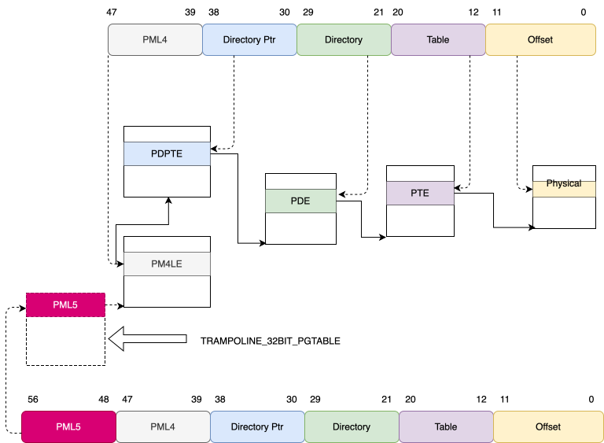
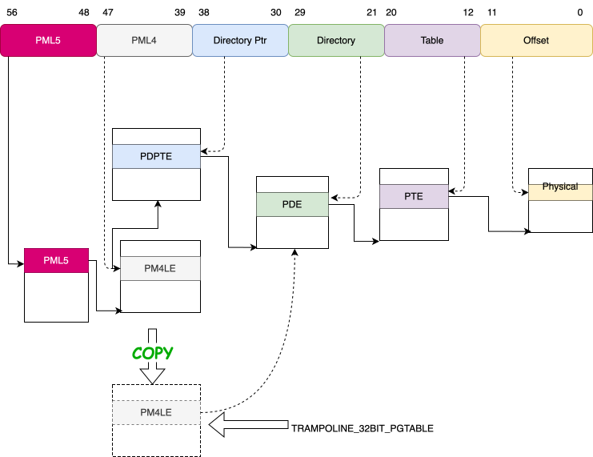

[mm:la57] switch to la57
overview
在intel sdm 4.1.2 Paging-Mode Enabling, 中提到:
CR4.PAE and CR4.LA57 cannot be modified while either 4-level paging or 5-level paging is in use (when CR0.PG = 1 and IA32_EFEe.LME = 1 ). Attempts to do so using MOV to CR4 cause a general-protection exception (#GP(0)).
不能在 long mode分页时开启修改 CR4.LA57以及CR4.PAE, 否则会触发 #GP
而kernel 又支持配置no5lvl, 来决定是否使能la57 feature:
- set no5lvl : 4-level page table
- not set no5lvl : 5-level page table
那我们来看下, 内核是如何根据该参数切换的。
内核启动 – startup64
compressed/vmlinux.lds.S 会设置compressed 程序 efi的入口(ENTRY())，以及架构 (OUTPUT_ARCH()), 引导器会根据该配置, 在进入ENTRY()之前，进入相应的cpu mode.
引导器可能是startup_32, 页可能是64bit bootloader
1
2
3
4
5
6
7
#ifdef CONFIG_X86_64
OUTPUT_ARCH(i386:x86-64)
ENTRY(startup_64)
#else
OUTPUT_ARCH(i386)
ENTRY(startup_32)
#endif
例如，如果配置(i386:x86-64), cpu 就会进入long mode, 调用startup_64, 之前会通过esi传入boot_params参数, 而在startup_64函数中，则会调用 paging_prepare()为切换CR4.LA57, 做好跳板:
paging_prepare
startup_64 调用paging_prepare()代码如下
1
2
3
4
5
6
7
8
9
10
11
12
13
14
15
16
17
18
19
20
21
SYM_CODE_START(startup_64)
...
/*
* paging_prepare() sets up the trampoline and checks if we need to
* enable 5-level paging.
*
* paging_prepare() returns a two-quadword structure which lands
* into RDX:RAX:
* - Address of the trampoline is returned in RAX.
* - Non zero RDX means trampoline needs to enable 5-level
* paging.
*
* RSI holds real mode data and needs to be preserved across
* this function call.
*/
pushq %rsi
movq %rsi, %rdi /* real mode address */
call paging_prepare
popq %rsi
而paging_prepare(), 需要做:
准备一个32-bit code(兼容模式) 代码段用来切换 la57
为什么要这样做呢? 原因是x86在进行paging mode切换时, 需要disable paging:
===Intel SDM 4.1.2 Paging-Mode Enabling ===
Software cannot transition directly between 4-level paging (or 5-level paging) and any of other paging mode. It must first disable paging (by clearing CR0.PG with MOV to CR0), then set CR4.PAE, IA32_EFER.LME, and CR4.LA57 to the desired values (with MOV to CR4 and WRMSR), and then re-enable paging (by setting CR0.PG with MOV to CR0). As noted earlier, an attempt to modify CR4.PAE, IA32_EFER.LME, or CR.LA57 while 4-level paging or 5-level paging is enabled causes a general-protection exception (#GP(0)).
软件不能在四级页表（或五级页表）与其他分页模式之间直接切换。必须先通过将 CR0.PG 清零（使用 MOV 指令写入 CR0）来禁用分页，然后再通过设置 CR4.PAE、 IA32_EFER.LME 和 CR4.LA57 为所需的值（分别使用 MOV 指令写入 CR4 和 WRMSR 指令 写入 MSR），最后重新启用分页（通过设置 CR0.PG 位）。如前所述，如果在已启用四级 页表或五级页表的情况下试图修改 CR4.PAE、IA32_EFER.LME 或 CR4.LA57，会导致一般 保护异常（#GP(0)）。
但是disable paging 时, 会退出IA-32e mode
===Intel SDM 10.8.5.4 Switching Out of IA-32e Mode Operation ===
To return from IA-32e mode to paged-protected mode operation operating systems must use the following sequence:
- Switch to compatibility mode.
- Deactivate IA-32e mode by clearing CR0.PG = 0. This causes the processor to set IA32_EFER.LMA = 0. The MOV CR0 instruction used to disable paging and subsequent instructions must be located in an identity-mapped page.
然而, 在切回IA-32e mode时(enable paging)，会检查CS L-bit 是否设置，如果设置，就 报告 #GP.
=== Intel SDM MOV—Move to/from Control Registers ===
Protected Mode Exceptions
#GP(0)
If an attempt is made to activate IA-32e mode and either the current CS has the L-bit set or the TR references a 16-bit TSS.
所以, 我们来总结下，IA32e mode 的4-level paging 和 5-level paging切换需要做哪些 事情:
- switching to compatibility mode
- disable paging
- set/clear CR0.LA57
- enable paging
好，我们来看下paging_prepare()是否做了这样的事情:
1
2
3
4
5
6
7
8
9
10
11
12
13
14
15
16
17
18
19
20
21
22
23
24
25
26
27
28
29
30
31
32
33
34
paging_prepare
## 满足如下条件, 使能la57 feature
## 1. 编译选项
## 2. 没有配置no5lvl
## 3. cpuid满足(有该leaf, 并且有该feature)
|-> if IS_ENABLED(CONFIG_X86_5LEVEL) &&
!cmdline_find_option_bool("no5lvl") &&
native_cpuid_eax(0) >= 7 &&
(native_cpuid_ecx(7) & (1 << (X86_FEATURE_LA57 & 31)))
\-> paging_config.l5_required = 1
## 找一个跳板(从e820中, 先略过)
|-> paging_config.trampoline_start = find_trampoline_placement();
## 将跳板代码copy进准备好的内存区域
|-> trampoline_32bit = (unsigned long *)paging_config.trampoline_start;
|-> memset(trampoline_32bit, 0, TRAMPOLINE_32BIT_SIZE);
|-> memcpy(trampoline_32bit + TRAMPOLINE_32BIT_CODE_OFFSET / sizeof(unsigned long),
&trampoline_32bit_src, TRAMPOLINE_32BIT_CODE_SIZE);
# 好, 先在跳转完了，那接下来该准备页表了
## 这里说明不需要切换paging mode
|-> if paging_config.l5_required == !!(native_read_cr4() & X86_CR4_LA57)
|-> goto out
## 需要切换到 5-level paging
|-> if paging_config.l5_required
\-> trampoline_32bit[TRAMPOLINE_32BIT_PGTABLE_OFFSET] = \
__native_read_cr3() | _PAGE_TABLE_NOENC;
--> else:
\-> src = *(unsigned long *)__native_read_cr3() & PAGE_MASK;
\-> memcpy(trampoline_32bit + TRAMPOLINE_32BIT_PGTABLE_OFFSET / sizeof(unsigned long),
(void *)src, PAGE_SIZE);
在4-level 转换到5-level时，需要新增一级paging table, 该paging table只需要初始化 index0 的 entry.

在5-level转换到4-level时，理论上不需要新增paging table，而需要删除一级paging table，这里的做法时，获取原来的 PML5的第一个entry, 找到 PML4，然后copy 该PML4到 trampoline paging.

enter trampoline32
1
2
3
4
5
6
7
8
9
10
11
12
13
14
15
16
17
18
19
SYM_CODE_START(startup_64)
...
/* Save the trampoline address in RCX */
movq %rax, %rcx
/*
* Load the address of trampoline_return() into RDI.
* It will be used by the trampoline to return to the main code.
*/
leaq trampoline_return(%rip), %rdi
/* Switch to compatibility mode (CS.L = 0 CS.D = 1) via far return */
pushq $__KERNEL32_CS
leaq TRAMPOLINE_32BIT_CODE_OFFSET(%rax), %rax
pushq %rax
lretq
trampoline_return:
/* Restore the stack, the 32-bit trampoline uses its own stack */
leaq rva(boot_stack_end)(%rbx), %rsp
参考链接
- x86/boot/compressed: Enable 5-level paging during decompression stage
- 34bbb0009f3b7a5eef1ab34f14e5dbf7b8fc389c
- intel spec: 2.2 MODES OF OPERATION
- Figure 2-3. Transitions Among the Processor’s Operating Modes